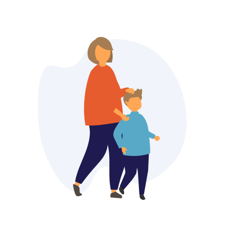
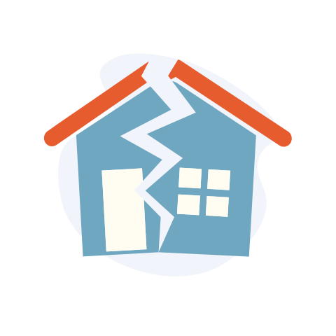
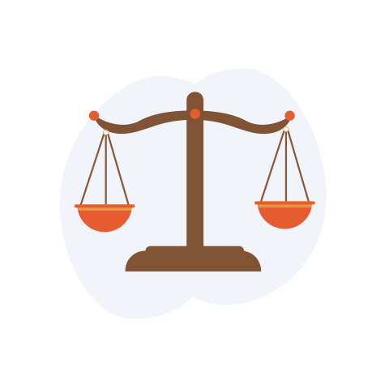
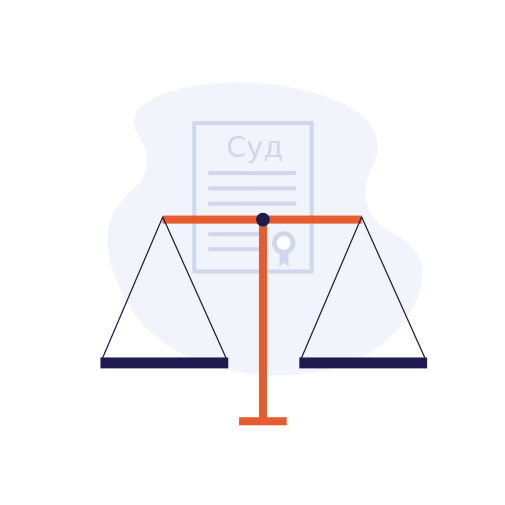

Что такое медиация?
Медиация — это форма альтернативного разрешения споров с помощью
третьей
нейтральной
стороны — медиатора.
С помощью процедуры медиации посредник помогает участникам спора прийти к взаимовыгодному решению и
заключить
медиативное соглашение,
которое учитывает интересы всех сторон. Именно поэтому медиация считается самой мягкой формой разрешения
конфликтов.
Если ваши конфликты носят сложный, глубинный характер, и у вас не
получается
найти
решения самостоятельно,
обращайтесь за помощью к специалистам сети служб медиации столичных семейных центров.
Что необходимо знать о процедуре медиации
Стороны в
процессе медиации имеют равные права
Медиатор
обеспечивает полную беспристрастность и равные права каждой из сторон
Участие в
процедуре медиации строго добровольное
Вся
информация,
полученная в процессе медиации строго конфиденциальна
Какие конфликты помогут решить медиаторы
КОНФЛИКТЫ С БЛИЗКИМИ И РОДНЫМИ
- бракоразводные процессы;
- определение места жительства ребенка и порядка общения;
- отношения между поколениями;
- расхождение взглядов на воспитание и образование детей.

ДЕТСКО-РОДИТЕЛЬСКИЕ КОНФЛИКТЫ
- административные правонарушения;
- жестокое обращение с ребенком;
- конфликты на почве обучения;
- недоверие взрослых к окружению подростка;
- авторитарный стиль воспитания;
- несоблюдение внутрисемейного порядка;
- отсутствие доверия.
КОНФЛИКТЫ СО СВЕРСТНИКАМИ
- травля со стороны группы;
- игнорирование и бойкоты;
- вымогательство или шантаж

РАЗДЕЛ ИМУЩЕСТВА И ДРУГИЕ ИМУЩЕСТВЕННЫЕ СПОРЫ, ЗАТРАГИВАЮЩИЕ ИНТЕРЕСЫ
ДЕТЕЙ
МЕЖНАЦИОНАЛЬНЫЕ И РЕЛИГИОЗНЫЕ КОНФЛИКТЫ

НАСЛЕДСТВЕННЫЕ СПОРЫ
Плюсы медиации в сравнении с иными способами урегулирования
конфликтов
МЕДИАЦИЯ

СУД
- Процедура медиации подразумевает добровольность
- Медиатор выбирается
- Ускоренная и неформальная процедура
- Конфиденциальность
- Сотрудничество сторон
- Процесс может начаться и вопреки одной из сторон
- Судья назначается
- Длительная и формализованная процедура
- Публичность процесса
- Состязательность сторон